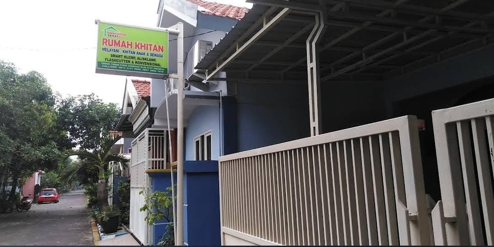
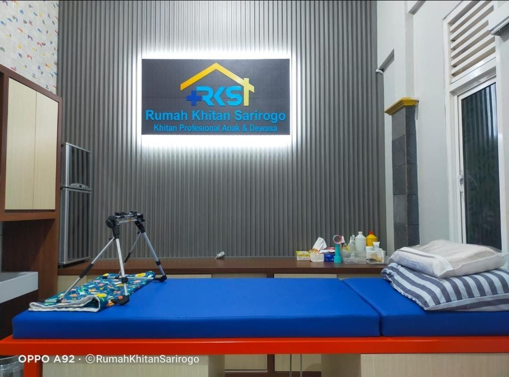
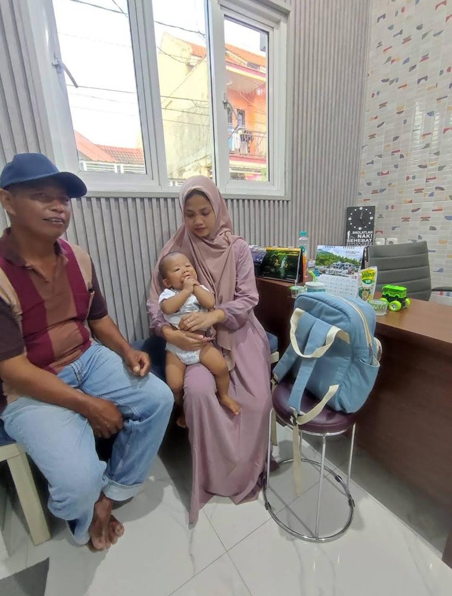
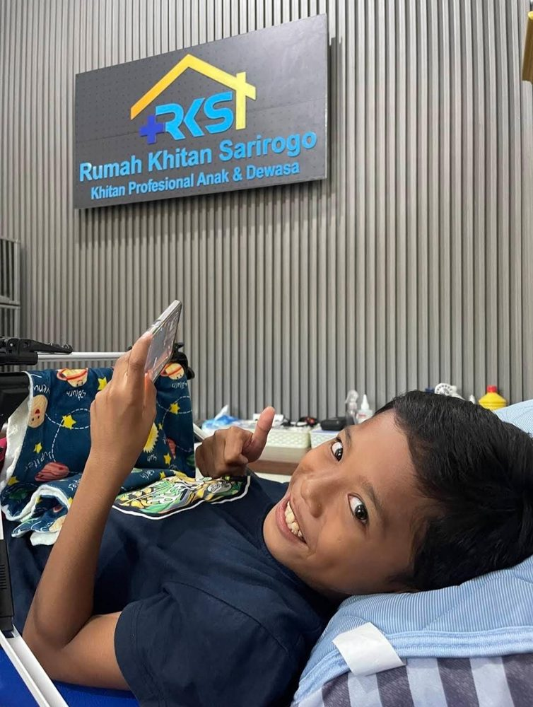
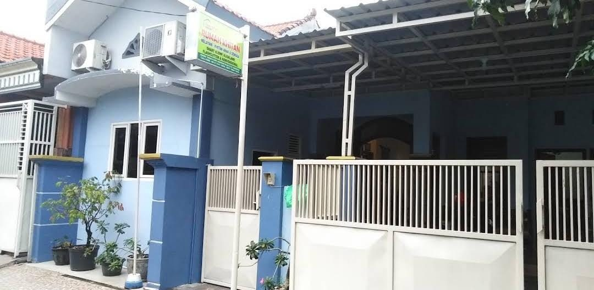

Fasilitas
Fasilitas yang Membuat Anak Lebih Nyaman
Lihat langsung ruang dan suasana klinik kami sebelum berkunjung.

Tampak depan klinik
Papan nama dan bagian depan klinik yang mudah dikenali.
Papan nama dan bagian depan klinik yang mudah dikenali.

Lingkungan klinik
Berada di lingkungan perumahan yang tenang.
Berada di lingkungan perumahan yang tenang.

Ruang tindakan
Ruang tindakan yang bersih dan tertata.
Ruang tindakan yang bersih dan tertata.

Area tunggu
Area tunggu untuk orang tua dan keluarga.
Area tunggu untuk orang tua dan keluarga.

Fasilitas hiburan anak
Fasilitas hiburan agar anak tetap nyaman.
Fasilitas hiburan agar anak tetap nyaman.

Sudut depan klinik
Sudut tampak depan klinik.
Sudut tampak depan klinik.
Video
Tur ruang tindakan
Tonton video singkat suasana ruang tindakan kami.
Ingin melihat langsung?
Hubungi kami untuk mengetahui jadwal kunjungan dan konsultasi.